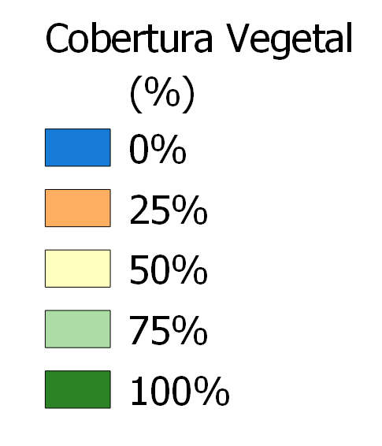

<!doctype html>
<html lang="en">
    <head>
        <meta charset="utf-8">
        <meta http-equiv="X-UA-Compatible" content="IE=edge">
        <meta name="viewport" content="initial-scale=1,user-scalable=no,maximum-scale=1,width=device-width">
        <meta name="mobile-web-app-capable" content="yes">
        <meta name="apple-mobile-web-app-capable" content="yes">
        <link rel="stylesheet" href="css/leaflet.css"><link rel="stylesheet" href="css/L.Control.Locate.min.css">
        <link rel="stylesheet" href="css/qgis2web.css"><link rel="stylesheet" href="css/fontawesome-all.min.css">
        <style>
        html, body, #map {
            width: 100%;
            height: 100%;
            padding: 0;
            margin: 0;
        }
        </style>
        <title></title>
    </head>
    <body>
        <div id="map">
        </div>
        <script src="js/qgis2web_expressions.js"></script>
        <script src="js/leaflet.js"></script><script src="js/L.Control.Locate.min.js"></script>
        <script src="js/leaflet.rotatedMarker.js"></script>
        <script src="js/leaflet.pattern.js"></script>
        <script src="js/leaflet-hash.js"></script>
        <script src="js/Autolinker.min.js"></script>
        <script src="js/rbush.min.js"></script>
        <script src="js/labelgun.min.js"></script>
        <script src="js/labels.js"></script>
        <script src="data/LimiteRS_2.js"></script>
        <script src="data/ReservaBiolgicadoIbirapuit_3.js"></script>
        <script src="data/readePreservaoAmbientaldoIbirapuit_4.js"></script>
        <script src="data/ParqueEstadualdoEspinilho_5.js"></script>
        <script src="data/Parque_Estadual_do_Podocarpus_6.js"></script>
        <script>
        var map = L.map('map', {
            zoomControl:true, maxZoom:28, minZoom:1
        }).fitBounds([[-34.321310439277305,-58.54139803864496],[-26.130325111655846,-46.59219591364431]]);
        var hash = new L.Hash(map);
        map.attributionControl.setPrefix('<a href="https://github.com/tomchadwin/qgis2web" target="_blank">qgis2web</a> &middot; <a href="https://leafletjs.com" title="A JS library for interactive maps">Leaflet</a> &middot; <a href="https://qgis.org">QGIS</a>');
        var autolinker = new Autolinker({truncate: {length: 30, location: 'smart'}});
        L.control.locate({locateOptions: {maxZoom: 19}}).addTo(map);
        var bounds_group = new L.featureGroup([]);
        function setBounds() {
        }
        map.createPane('pane_GoogleSatellite_0');
        map.getPane('pane_GoogleSatellite_0').style.zIndex = 400;
        var layer_GoogleSatellite_0 = L.tileLayer('https://mt1.google.com/vt/lyrs=s&x={x}&y={y}&z={z}', {
            pane: 'pane_GoogleSatellite_0',
            opacity: 1.0,
            attribution: '<a href="https://www.google.at/permissions/geoguidelines/attr-guide.html">Map data ©2015 Google</a>',
            minZoom: 1,
            maxZoom: 28,
            minNativeZoom: 0,
            maxNativeZoom: 20
        });
        layer_GoogleSatellite_0;
        map.addLayer(layer_GoogleSatellite_0);
        map.createPane('pane_CoberturaVegetal_1');
        map.getPane('pane_CoberturaVegetal_1').style.zIndex = 401;
        var img_CoberturaVegetal_1 = 'data/CoberturaVegetal_1.png';
        var img_bounds_CoberturaVegetal_1 = [[-33.75117799396899,-57.680790543211636],[-26.93314461338702,-49.684409434192524]];
        var layer_CoberturaVegetal_1 = new L.imageOverlay(img_CoberturaVegetal_1,
                                              img_bounds_CoberturaVegetal_1,
                                              {pane: 'pane_CoberturaVegetal_1'});
        bounds_group.addLayer(layer_CoberturaVegetal_1);
        map.addLayer(layer_CoberturaVegetal_1);
        function pop_LimiteRS_2(feature, layer) {
            var popupContent = '<table>\
                    <tr>\
                        <td colspan="2">' + (feature.properties['CD_UF'] !== null ? autolinker.link(feature.properties['CD_UF'].toLocaleString()) : '') + '</td>\
                    </tr>\
                    <tr>\
                        <td colspan="2">' + (feature.properties['NM_UF'] !== null ? autolinker.link(feature.properties['NM_UF'].toLocaleString()) : '') + '</td>\
                    </tr>\
                    <tr>\
                        <td colspan="2">' + (feature.properties['SIGLA_UF'] !== null ? autolinker.link(feature.properties['SIGLA_UF'].toLocaleString()) : '') + '</td>\
                    </tr>\
                    <tr>\
                        <td colspan="2">' + (feature.properties['NM_REGIAO'] !== null ? autolinker.link(feature.properties['NM_REGIAO'].toLocaleString()) : '') + '</td>\
                    </tr>\
                </table>';
            layer.bindPopup(popupContent, {maxHeight: 400});
        }

        function style_LimiteRS_2_0() {
            return {
                pane: 'pane_LimiteRS_2',
                opacity: 1,
                color: 'rgba(35,35,35,1.0)',
                dashArray: '',
                lineCap: 'butt',
                lineJoin: 'miter',
                weight: 2.0, 
                fill: true,
                fillOpacity: 1,
                fillColor: 'rgba(229,182,54,0.0)',
                interactive: false,
            }
        }
        map.createPane('pane_LimiteRS_2');
        map.getPane('pane_LimiteRS_2').style.zIndex = 402;
        map.getPane('pane_LimiteRS_2').style['mix-blend-mode'] = 'normal';
        var layer_LimiteRS_2 = new L.geoJson(json_LimiteRS_2, {
            attribution: '',
            interactive: false,
            dataVar: 'json_LimiteRS_2',
            layerName: 'layer_LimiteRS_2',
            pane: 'pane_LimiteRS_2',
            onEachFeature: pop_LimiteRS_2,
            style: style_LimiteRS_2_0,
        });
        bounds_group.addLayer(layer_LimiteRS_2);
        map.addLayer(layer_LimiteRS_2);
        function pop_ReservaBiolgicadoIbirapuit_3(feature, layer) {
            var popupContent = '<table>\
                    <tr>\
                        <th scope="row">Nome</th>\
                        <td>' + (feature.properties['Nome'] !== null ? autolinker.link(feature.properties['Nome'].toLocaleString()) : '') + '</td>\
                    </tr>\
                    <tr>\
                        <th scope="row">Municipio</th>\
                        <td>' + (feature.properties['Municipio'] !== null ? autolinker.link(feature.properties['Municipio'].toLocaleString()) : '') + '</td>\
                    </tr>\
                    <tr>\
                        <th scope="row">Bioma</th>\
                        <td>' + (feature.properties['Bioma'] !== null ? autolinker.link(feature.properties['Bioma'].toLocaleString()) : '') + '</td>\
                    </tr>\
                    <tr>\
                        <th scope="row">Área (ha)</th>\
                        <td>' + (feature.properties['Área (ha)'] !== null ? autolinker.link(feature.properties['Área (ha)'].toLocaleString()) : '') + '</td>\
                    </tr>\
                </table>';
            layer.bindPopup(popupContent, {maxHeight: 400});
        }

        function style_ReservaBiolgicadoIbirapuit_3_0() {
            return {
                pane: 'pane_ReservaBiolgicadoIbirapuit_3',
                opacity: 1,
                color: 'rgba(255,127,0,1.0)',
                dashArray: '',
                lineCap: 'butt',
                lineJoin: 'miter',
                weight: 6.0, 
                fill: true,
                fillOpacity: 1,
                fillColor: 'rgba(255,127,0,0.0)',
                interactive: true,
            }
        }
        map.createPane('pane_ReservaBiolgicadoIbirapuit_3');
        map.getPane('pane_ReservaBiolgicadoIbirapuit_3').style.zIndex = 403;
        map.getPane('pane_ReservaBiolgicadoIbirapuit_3').style['mix-blend-mode'] = 'normal';
        var layer_ReservaBiolgicadoIbirapuit_3 = new L.geoJson(json_ReservaBiolgicadoIbirapuit_3, {
            attribution: '',
            interactive: true,
            dataVar: 'json_ReservaBiolgicadoIbirapuit_3',
            layerName: 'layer_ReservaBiolgicadoIbirapuit_3',
            pane: 'pane_ReservaBiolgicadoIbirapuit_3',
            onEachFeature: pop_ReservaBiolgicadoIbirapuit_3,
            style: style_ReservaBiolgicadoIbirapuit_3_0,
        });
        bounds_group.addLayer(layer_ReservaBiolgicadoIbirapuit_3);
        map.addLayer(layer_ReservaBiolgicadoIbirapuit_3);
        function pop_readePreservaoAmbientaldoIbirapuit_4(feature, layer) {
            var popupContent = '<table>\
                    <tr>\
                        <th scope="row">Nome</th>\
                        <td>' + (feature.properties['Nome'] !== null ? autolinker.link(feature.properties['Nome'].toLocaleString()) : '') + '</td>\
                    </tr>\
                    <tr>\
                        <th scope="row">Municipio</th>\
                        <td>' + (feature.properties['Municipio'] !== null ? autolinker.link(feature.properties['Municipio'].toLocaleString()) : '') + '</td>\
                    </tr>\
                    <tr>\
                        <th scope="row">Bioma</th>\
                        <td>' + (feature.properties['Bioma'] !== null ? autolinker.link(feature.properties['Bioma'].toLocaleString()) : '') + '</td>\
                    </tr>\
                    <tr>\
                        <td colspan="2"><strong>Área (ha)</strong><br />' + (feature.properties['Área (ha)'] !== null ? autolinker.link(feature.properties['Área (ha)'].toLocaleString()) : '') + '</td>\
                    </tr>\
                </table>';
            layer.bindPopup(popupContent, {maxHeight: 400});
        }

        function style_readePreservaoAmbientaldoIbirapuit_4_0() {
            return {
                pane: 'pane_readePreservaoAmbientaldoIbirapuit_4',
                opacity: 1,
                color: 'rgba(35,35,35,1.0)',
                dashArray: '',
                lineCap: 'butt',
                lineJoin: 'miter',
                weight: 6.0, 
                fill: true,
                fillOpacity: 1,
                fillColor: 'rgba(0,0,0,0.0)',
                interactive: true,
            }
        }
        map.createPane('pane_readePreservaoAmbientaldoIbirapuit_4');
        map.getPane('pane_readePreservaoAmbientaldoIbirapuit_4').style.zIndex = 404;
        map.getPane('pane_readePreservaoAmbientaldoIbirapuit_4').style['mix-blend-mode'] = 'normal';
        var layer_readePreservaoAmbientaldoIbirapuit_4 = new L.geoJson(json_readePreservaoAmbientaldoIbirapuit_4, {
            attribution: '',
            interactive: true,
            dataVar: 'json_readePreservaoAmbientaldoIbirapuit_4',
            layerName: 'layer_readePreservaoAmbientaldoIbirapuit_4',
            pane: 'pane_readePreservaoAmbientaldoIbirapuit_4',
            onEachFeature: pop_readePreservaoAmbientaldoIbirapuit_4,
            style: style_readePreservaoAmbientaldoIbirapuit_4_0,
        });
        bounds_group.addLayer(layer_readePreservaoAmbientaldoIbirapuit_4);
        map.addLayer(layer_readePreservaoAmbientaldoIbirapuit_4);
        function pop_ParqueEstadualdoEspinilho_5(feature, layer) {
            var popupContent = '<table>\
                    <tr>\
                        <th scope="row">Nome</th>\
                        <td>' + (feature.properties['Nome'] !== null ? autolinker.link(feature.properties['Nome'].toLocaleString()) : '') + '</td>\
                    </tr>\
                    <tr>\
                        <th scope="row">Município</th>\
                        <td>' + (feature.properties['Município'] !== null ? autolinker.link(feature.properties['Município'].toLocaleString()) : '') + '</td>\
                    </tr>\
                    <tr>\
                        <th scope="row">Bioma</th>\
                        <td>' + (feature.properties['Bioma'] !== null ? autolinker.link(feature.properties['Bioma'].toLocaleString()) : '') + '</td>\
                    </tr>\
                    <tr>\
                        <th scope="row">Área (ha)</th>\
                        <td>' + (feature.properties['Área (ha)'] !== null ? autolinker.link(feature.properties['Área (ha)'].toLocaleString()) : '') + '</td>\
                    </tr>\
                </table>';
            layer.bindPopup(popupContent, {maxHeight: 400});
        }

        function style_ParqueEstadualdoEspinilho_5_0() {
            return {
                pane: 'pane_ParqueEstadualdoEspinilho_5',
                opacity: 1,
                color: 'rgba(227,26,28,1.0)',
                dashArray: '',
                lineCap: 'butt',
                lineJoin: 'miter',
                weight: 6.0, 
                fill: true,
                fillOpacity: 1,
                fillColor: 'rgba(227,26,28,0.0)',
                interactive: true,
            }
        }
        map.createPane('pane_ParqueEstadualdoEspinilho_5');
        map.getPane('pane_ParqueEstadualdoEspinilho_5').style.zIndex = 405;
        map.getPane('pane_ParqueEstadualdoEspinilho_5').style['mix-blend-mode'] = 'normal';
        var layer_ParqueEstadualdoEspinilho_5 = new L.geoJson(json_ParqueEstadualdoEspinilho_5, {
            attribution: '',
            interactive: true,
            dataVar: 'json_ParqueEstadualdoEspinilho_5',
            layerName: 'layer_ParqueEstadualdoEspinilho_5',
            pane: 'pane_ParqueEstadualdoEspinilho_5',
            onEachFeature: pop_ParqueEstadualdoEspinilho_5,
            style: style_ParqueEstadualdoEspinilho_5_0,
        });
        bounds_group.addLayer(layer_ParqueEstadualdoEspinilho_5);
        map.addLayer(layer_ParqueEstadualdoEspinilho_5);
        function pop_Parque_Estadual_do_Podocarpus_6(feature, layer) {
            var popupContent = '<table>\
                    <tr>\
                        <th scope="row">Nome</th>\
                        <td>' + (feature.properties['Nome'] !== null ? autolinker.link(feature.properties['Nome'].toLocaleString()) : '') + '</td>\
                    </tr>\
                    <tr>\
                        <th scope="row">Município</th>\
                        <td>' + (feature.properties['Município'] !== null ? autolinker.link(feature.properties['Município'].toLocaleString()) : '') + '</td>\
                    </tr>\
                    <tr>\
                        <th scope="row">Bioma</th>\
                        <td>' + (feature.properties['Bioma'] !== null ? autolinker.link(feature.properties['Bioma'].toLocaleString()) : '') + '</td>\
                    </tr>\
                    <tr>\
                        <th scope="row">Área (ha)</th>\
                        <td>' + (feature.properties['Área (ha)'] !== null ? autolinker.link(feature.properties['Área (ha)'].toLocaleString()) : '') + '</td>\
                    </tr>\
                </table>';
            layer.bindPopup(popupContent, {maxHeight: 400});
        }

        function style_Parque_Estadual_do_Podocarpus_6_0() {
            return {
                pane: 'pane_Parque_Estadual_do_Podocarpus_6',
                opacity: 1,
                color: 'rgba(22,40,236,1.0)',
                dashArray: '',
                lineCap: 'butt',
                lineJoin: 'miter',
                weight: 6.0, 
                fill: true,
                fillOpacity: 1,
                fillColor: 'rgba(22,40,236,0.0)',
                interactive: true,
            }
        }
        map.createPane('pane_Parque_Estadual_do_Podocarpus_6');
        map.getPane('pane_Parque_Estadual_do_Podocarpus_6').style.zIndex = 406;
        map.getPane('pane_Parque_Estadual_do_Podocarpus_6').style['mix-blend-mode'] = 'normal';
        var layer_Parque_Estadual_do_Podocarpus_6 = new L.geoJson(json_Parque_Estadual_do_Podocarpus_6, {
            attribution: '',
            interactive: true,
            dataVar: 'json_Parque_Estadual_do_Podocarpus_6',
            layerName: 'layer_Parque_Estadual_do_Podocarpus_6',
            pane: 'pane_Parque_Estadual_do_Podocarpus_6',
            onEachFeature: pop_Parque_Estadual_do_Podocarpus_6,
            style: style_Parque_Estadual_do_Podocarpus_6_0,
        });
        bounds_group.addLayer(layer_Parque_Estadual_do_Podocarpus_6);
        map.addLayer(layer_Parque_Estadual_do_Podocarpus_6);
        var baseMaps = {};
        L.control.layers(baseMaps,{' Parque_Estadual_do_Podocarpus': layer_Parque_Estadual_do_Podocarpus_6,' Parque Estadual do Espinilho': layer_ParqueEstadualdoEspinilho_5,' Área de Preservação Ambiental do Ibirapuitã': layer_readePreservaoAmbientaldoIbirapuit_4,' Reserva Biológica do Ibirapuitã': layer_ReservaBiolgicadoIbirapuit_3,' Limite RS': layer_LimiteRS_2,"Cobertura Vegetal": layer_CoberturaVegetal_1,"Google Satellite": layer_GoogleSatellite_0,},{collapsed:false}).addTo(map);
        setBounds();
        L.ImageOverlay.include({
            getBounds: function () {
                return this._bounds;
            }
        });
        var legend = L.control({position: 'bottomright'});
		legend.onAdd = function (map) {
			var div = L.DomUtil.create('div', 'info legend');
			div.innerHTML +=
            '';
    	return div;
		};
		legend.addTo(map);
        </script>
    </body>
</html>
